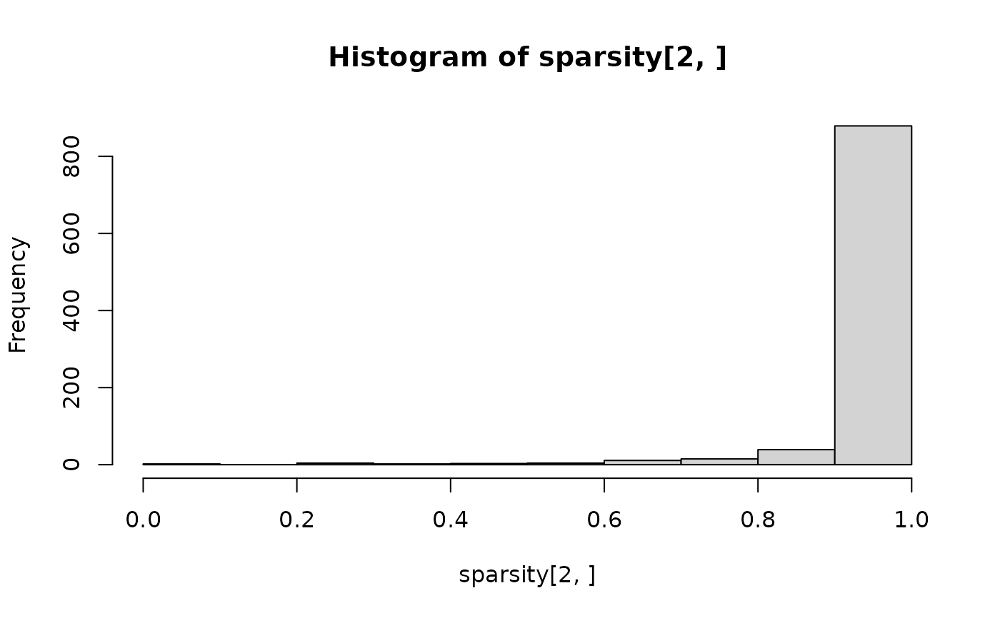
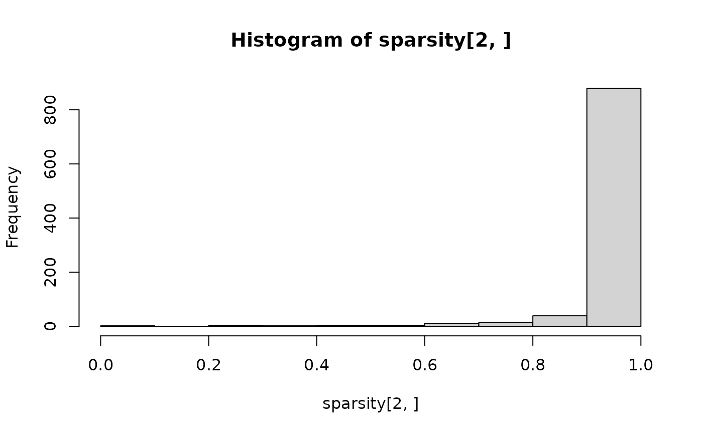

Calculate sparsity across the feature mode of a multi-way array.
Source:R/calculateSparsity.R
calculateSparsity.RdCalculate sparsity across the feature mode of a multi-way array.
Arguments
- dataset
See Fujita2023, Shao2019 or vanderPloeg2024.
- considerGroups
Consider subject groups in calculating sparsity (default FALSE)
- groupVariable
Column name in dataset$mode1 that should be used to consider groups (default "")
Value
Vector of sparsity fractions (N x J) where N is the number of groups and J is the number of features.
Examples
# No groups
sparsity = calculateSparsity(Fujita2023)
length(sparsity)
#> [1] 28
hist(sparsity)
 # Consider groups
colnames(Shao2019$mode1)
#> [1] "Individual" "Delivery_mode"
sparsity = calculateSparsity(Shao2019, considerGroups=TRUE, groupVariable="Delivery_mode")
dim(sparsity)
#> [1] 2 959
hist(sparsity[1,])
# Consider groups
colnames(Shao2019$mode1)
#> [1] "Individual" "Delivery_mode"
sparsity = calculateSparsity(Shao2019, considerGroups=TRUE, groupVariable="Delivery_mode")
dim(sparsity)
#> [1] 2 959
hist(sparsity[1,])
 hist(sparsity[2,])

hist(sparsity[2,])
